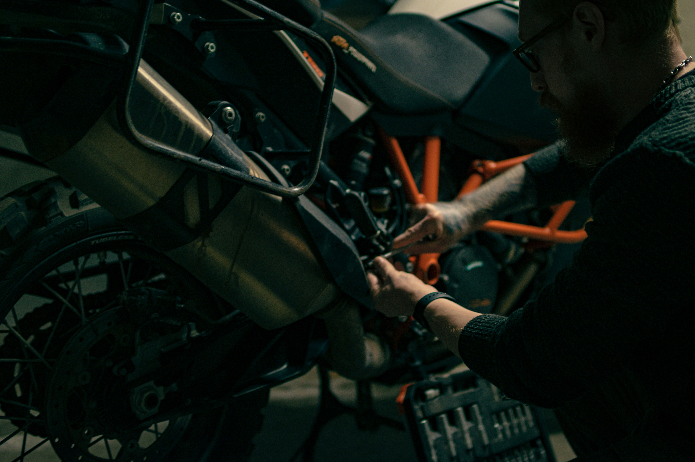
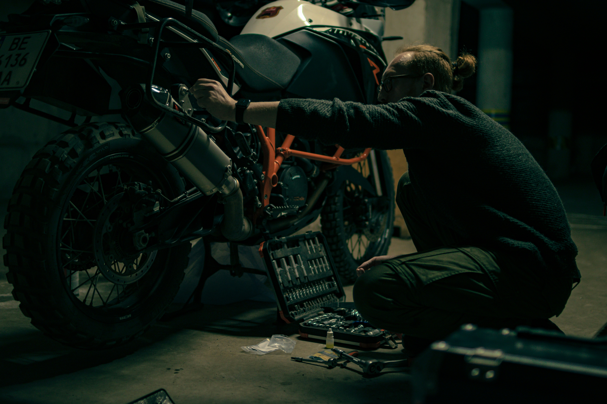
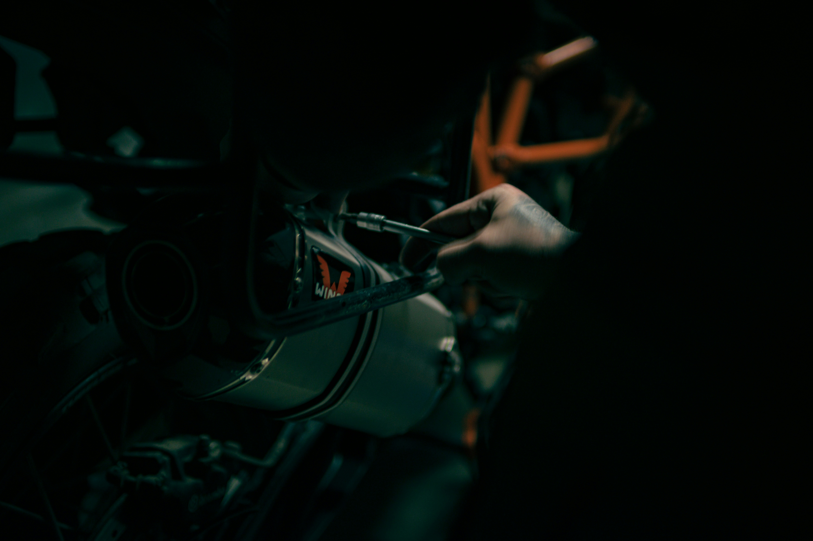
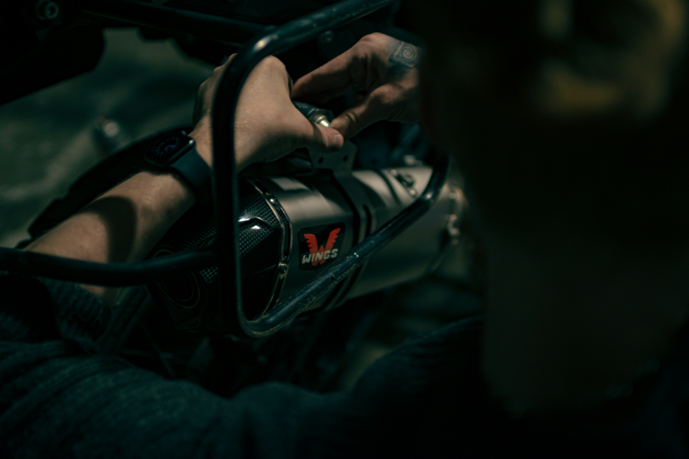
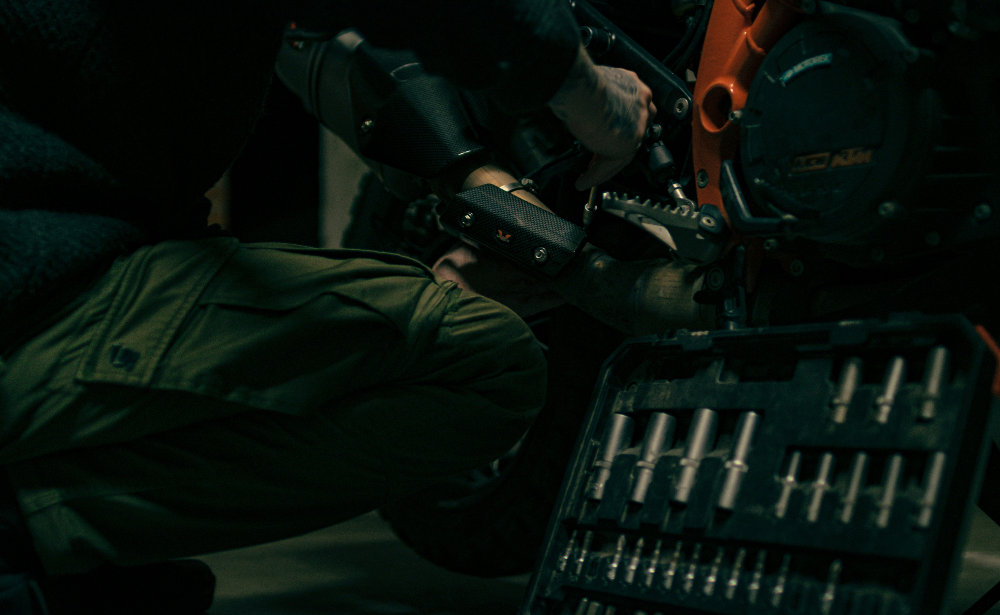

SERVIS MOTOR
Bengkel 2R siap menangani semua kebutuhan sepeda motor Anda.
Dengan dukungan mekanik profesional, peralatan lengkap, dan pelayanan ramah,
kami hadir sebagai mitra perawatan motor terbaik untuk Anda.
Kami hadir untuk mendampingi setiap tahap servis motor Anda, dari pemeriksaan awal hingga perawatan tuntas dengan hasil maksimal.
Seluruh proses servis dilakukan oleh mekanik berpengalaman yang memahami berbagai jenis sepeda motor. Keahlian kami memastikan hasil servis yang optimal.
Dengan sistem kerja yang tertata dan tim yang responsif, setiap motor diservis sesuai prosedur tanpa mengorbankan kualitas.
Bengkel kami dilengkapi dengan berbagai peralatan servis modern yang mendukung keakuratan dalam setiap tahap pengerjaan.
2R Service adalah bengkel motor yang menggabungkan layanan konvensional dengan teknologi digital. Kami menghadirkan pengalaman servis yang cepat serta transparan.
Dengan tim mekanik profesional dan peralatan lengkap, kami siap menjadi mitra terbaik untuk perawatan motor Anda.


Kami menyediakan layanan servis lengkap mulai dari servis rutin hingga perbaikan besar dengan jaminan kualitas terbaik dan waktu pengerjaan yang efisien.
Perawatan berkala untuk menjaga performa motor tetap prima di setiap kondisi.
Diagnosa dan perbaikan masalah mesin dengan teknisi berpengalaman.
Tersedia berbagai sparepart original dan berkualitas tinggi.
Kami memiliki sistem yang terstruktur untuk memastikan setiap kendaraan mendapatkan perawatan terbaik dengan alur kerja yang efisien dan transparan.
Ceritakan keluhan motor Anda, kami siap memberikan solusi terbaik.
Mekanik kami melakukan diagnosa menyeluruh pada kendaraan Anda.
Perbaikan dilakukan dengan teliti menggunakan peralatan modern.
Penyetelan akhir untuk memastikan performa motor optimal kembali.

Setiap detail diperhitungkan dalam setiap proses servis. Kami tidak hanya memperbaiki, kami memastikan motor Anda kembali dalam kondisi prima dan siap digunakan.

+62 823-6968-8220
Senin – Sabtu, 09.00–17.00Senin – Sabtu
09.00 – 17.00 WIB
Mns Reuleut, Kec. Kota Juang, Kab.
Bireuen, Aceh
4.9 / 5.0 Bintang
Berdasarkan 200+ ulasan